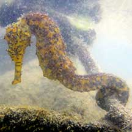
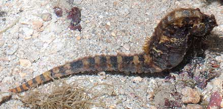
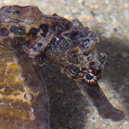
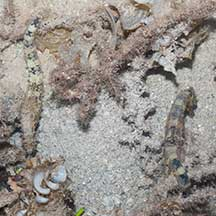
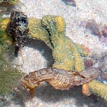
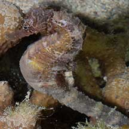
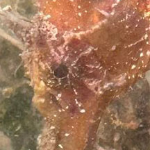

|
|
| fishes text index | photo index |
| Phylum Chordata > Subphylum Vertebrata > fishes > Family Syngnathidae > Genus Hippocampus |
| Tiger-tailed
seahorse Hippocampus comes Family Syngnathidae updated Oct 2020 Where seen? This large seahorse with a black-and-yellow banded tail is often seen on our Southern shores, with one seen at Changi in 2019. According to the Singapore Red Data Book, the Tiger-tailed seahorse is usually found in coral reefs, in Singapore, mainly around the Southern Islands. Features: 6-10cm long. Body without large, obvious spines. Colours seen include black, brown or yellowish with speckles. The tail is banded black and yellow. There are little white dots around the eye and on the cheeks. It's difficult to tell this seahorse apart from the Estuarine seahorse (Hippocampus kuda). More on how to tell apart the Tiger-tail and Estuarine seahorses. |
 Tanah Merah, Dec 10 |
 Tail is banded black and yellow. Sisters Island, May 13 |
 Labrador, Jun 05 |
 Little white dots around the eyes and on the cheeks. Labrador, Jun 05 |
 Well camouflaged. Terumbu Bemban, Mar 13 |
| Pregnant fathers: Seahorses reproduce in a peculiar way. It is male that carries the eggs in his body and thus becomes 'pregnant'. The female lays her eggs in his pouch. Emerging from the eggs, the babies hatch as miniature seahorses and may remain in the pouch for a while before the father goes into 'labour' and ejects them out of the pouch. |
 Often seen in a pair. Sisters Island, Aug 12 |
 Pregnant papa. Pulau Hantu, Aug 15 |
 Very pregnant papa. Sisters Island, Mar 12 |
| Status and threats: Seahorses are listed as CITES II (which means their international trade is monitored) and are considered globally vulnerable. Hippocampus comes is listed among the threatened animals of Singapore. |
*Species are difficult to positively identify without close examination of small features.
On this website, they are grouped by general large external features for convenience of display.
| Tiger-tailed seahorses on Singapore shores |
On wildsingapore
flickr
|
| Other sightings on Singapore shores |
 |
|
Links
References
|